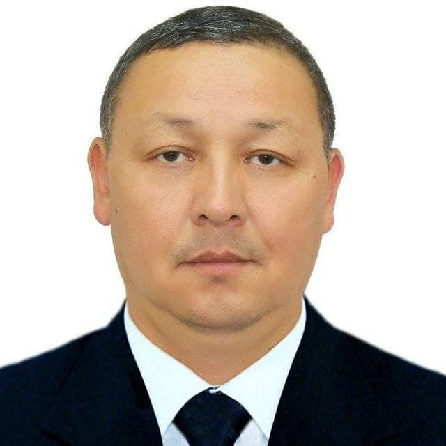
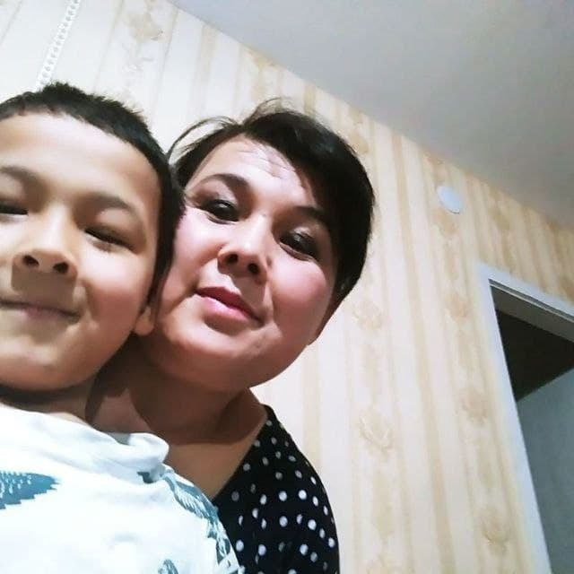
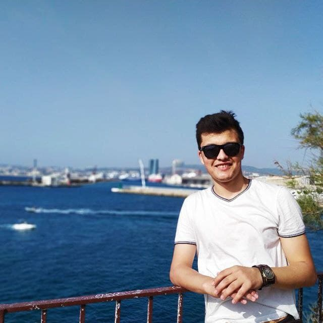
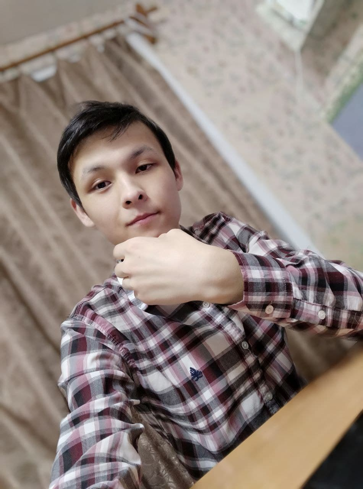
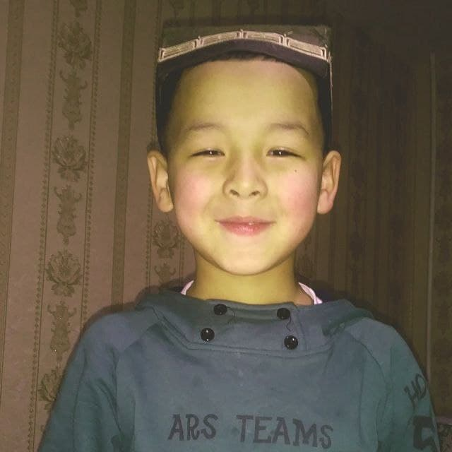

O`zim va oila a`zolarim haqida ma`lumot

Bozarov Abdulboqi
Dadam
1972 yil 1-fevralda Namangan viloyati Chortoq tumani Guldirov qishlog`ida tug`ilganlar. Maktabni a`lo baholar bilan bitirib, “Umid” grandi sohibi bo`ldilar va 1989-yilda
Minsk Davlat Universitetining Falsafa fakultetiga o`qishga kirdilar. U yerni bitirib, 1999-yilda esa Angliyaning Nyukasl Universiteti magistranti bo`ldilar.

Bozarova Muyassar
Onam
Onam Bozarova Muyassar 1976- yil 8- iyunda Guldirov qishlog`ida tug`ilganlar va qishlog`imizdagi 13- umumiy o`rta ta`lim maktabini bitirdilar. Maktabni bitirib, Namangan davlat universitetiga o`qishga kirdilar.
Hozirda Toshkent shahridagi 222-maktab psixologiya fani o`qituvchisilar.

Abdurahimov Nursulton
Akam
1996- yil 29- avgustda tug`ilganlar. 2014-yil TATU qoshidagi akademik litseyni qizil diplom bilan tamomlab, Rossiyaning Shimoliy Arktika Federal Universitetiga grand asosida o`qishga kirdilar.
Ushbu Universitetni ham qizil diplomga bitirgan holda, Erasmus grandi sohibi bo`ldi va yevropada o`qish imkoniyatini qo`lga kiritdi. Hozirda Fransiyadagi Marsel universiteti magistranti.

Abdurahimov Muslimbek
O`zim
Men 2001- yilda Guldirov qishlog`ida tug`ilganman. 2008- yilda 13- umumiy o`rta ta`lim maktabiga o`qishga qabul qilindim. 2013- yildan Toshkentdagi 27- umumiy o`rta ta`lim maktabida
o`qishimni davom ettirdim. 2019 -yilda litseyni bitirib, Rossiyaning Shimoliy Arktika Federal Universitetiga o`qishga kirdim va hozirda ushbu universitetning 2-bosqich talabasiman.

Abdurahimov Yusufbek
Ukam
Ukam 2013- yil 2- oktabrda Toshkent shahrida tug`ilgan. 2018-2020- yillarda Bolalar bog`chaga bordi. Hozirda esa 27- umumiy o`rta ta`lim maktabi 1- sinf o`quvchisi.